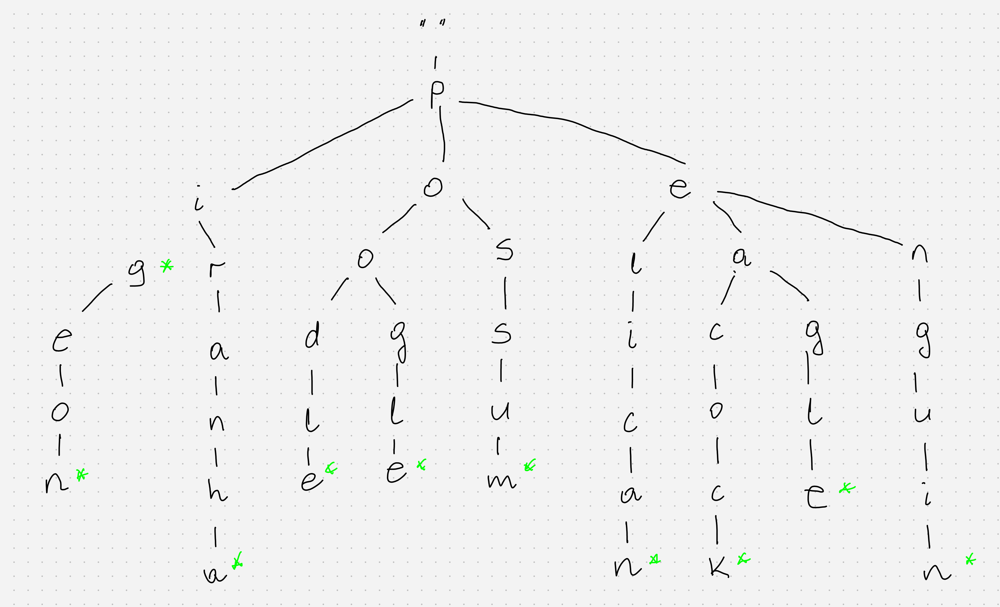

class: center, title-slide <br><br> ## CSCI-UA 480: APS ## Algorithmic Problem Solving <br/><br/><br/><br/><br/><br/><br/> ## String Algorithms - Using Trie .author[ Instructor: Joanna Klukowska <br> ] .license[ Copyright 2020 Joanna Klukowska. Unless noted otherwise all content is released under a <br> [Creative Commons Attribution-ShareAlike 4.0 International License](https://creativecommons.org/licenses/by-sa/4.0/).<br> Background image by Stewart Weiss<br>] --- layout:true template: default name: section class: inverse, middle, center --- layout:true template: default name: challenge class: challenge --- layout:true template: default name: poll class: inverse, full-height, center, middle --- layout:true template: default name: breakout class: breakout --- layout:true template:default name:slide class: slide .bottom-left[© Joanna Klukowska. CC-BY-SA.] --- ## Trie - Definition A __trie__ is a type of k-ary search tree. It is typically used with strings (for fast storage and retrieval). - originally proposed by Axel Thue in 1912, in the context of computers by Rene de la Briandias in 1959 and Edward Franklin in 1960 (independent work) - Franklin coined the name _trie_ from the middle syllable of _reTRIEval_ (as in information retrieval) and pronounced it /ˈtriː/ (the same as "tree") - it is more commonly now pronounced as /ˈtraɪ/ (the same as "try") to distinguish it from "tree" pronunciation -- Example .left-column2[ <a title="Booyabazooka (based on PNG image by Deco). Modifications by Superm401., Public domain, via Wikimedia Commons" href="https://commons.wikimedia.org/wiki/File:Trie_example.svg"> <img width="300" alt="Trie example" src="https://upload.wikimedia.org/wikipedia/commons/thumb/b/be/Trie_example.svg/256px-Trie_example.svg.png"> </a> ] .right-column2[ <a href="https://commons.wikimedia.org/wiki/File:Trie_example.svg"> Booyabazooka (based on PNG image by Deco). Modifications by Superm401.</a>, Public domain, via Wikimedia Commons A trie for keys "A", "to", "tea", "ted", "ten", "i", "in", and "inn". Each complete English word has an arbitrary integer value associated with it. ] --- ## Example Animals whose names start with "p" (for more complete list see [A-Z Animals](https://a-z-animals.com/animals/animals-that-start-with-p/) ). .center[  ] - Nodes representing actual words are marked with a green star. - The root node represents an empty string. - The path from the root to each internal node represents a prefix of a word in the set. --- ## Implementation __How do we store a tree like this?__ -- - each node contains an array of pointers to the next character - when all pointers are null, we are in a terminal node that represents a word - when some pointers are not-null, we are in an internal node that may represent a word, but definitely represents a prefix -- - how big should be such an array? -- - size of the character set we are working with -- - we need to be able to indicate somehow when an internal node is a word itself --- ## Implementation: search - `current` - is the current node in the trie - `target_string` - is the string for which we search - `length` - is the length of the prefix we accumulated so far ``` search ( current, target_string, length ) if length == length of target_string if current.is_word return true else return false next_letter = target_string[index] if current.children [ next_letter ] == null return false else return search (current.children[ next_letter ], target_string, length+1 ) ``` --- ## Implementation: add - `current` - is the current node in the trie - `new_string` - is the string we are adding - `length` - is the length of the prefix we accumulated so far ``` add ( current, new_string, length ) if length == length of new_string current.is_word = true return next_letter = new_string[index] if current.children [ next_letter ] == null current.children[ next_letter ] = new trie node add ( current.children[ next_letter ], new_string, length+1 ) ``` --- ## Implementation: remove - `current` - is the current node in the trie - `target_string` - is the string we are removing - `length` - is the length of the prefix we accumulated so far ``` remove ( current, target_string, length ) if length == length of target_string if current.is_word current.is_word = false else next_letter = target_string[index] if current.children [ next_letter ] != null not_needed = remove( current.children [ next_letter ], target_string, length+1 ) if ( not_needed ) current.children [ next_letter ] = null if current.is_word return false for each letter_pointer in current.children[] if letter_pointer != null return false return true ``` --- ## Discussion and problems - What is advantage of using trie over balanced BST of strings? -- - What is advantage of using trie over a hash table? -- - What applications would tries be useful in? -- - Sample problems: - Given a large number of words with duplicates (for example, all the words from all plays written by Shakespeare), find the one that occurs most frequently. - Suggest an algorithm that provides the word completion feature in a text editor. - How can we use a trie to sort a given set of strings? - [Find the Clones](http://poj.org/problem?id=2945) - [Hardwood Species](https://onlinejudge.org/external/102/10226.pdf) - [Dueue's Quiz](https://onlinejudge.org/external/109/10975.pdf) and [Where's Waldorf?](https://onlinejudge.org/external/100/10010.pdf) </optgroup>